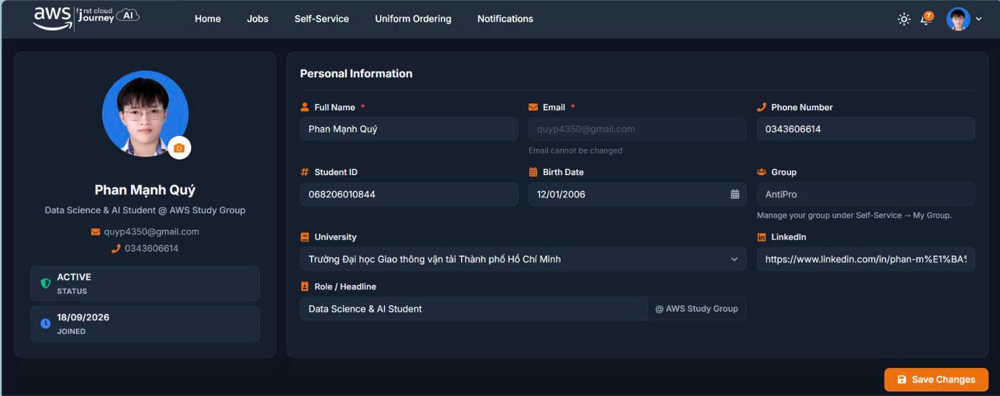
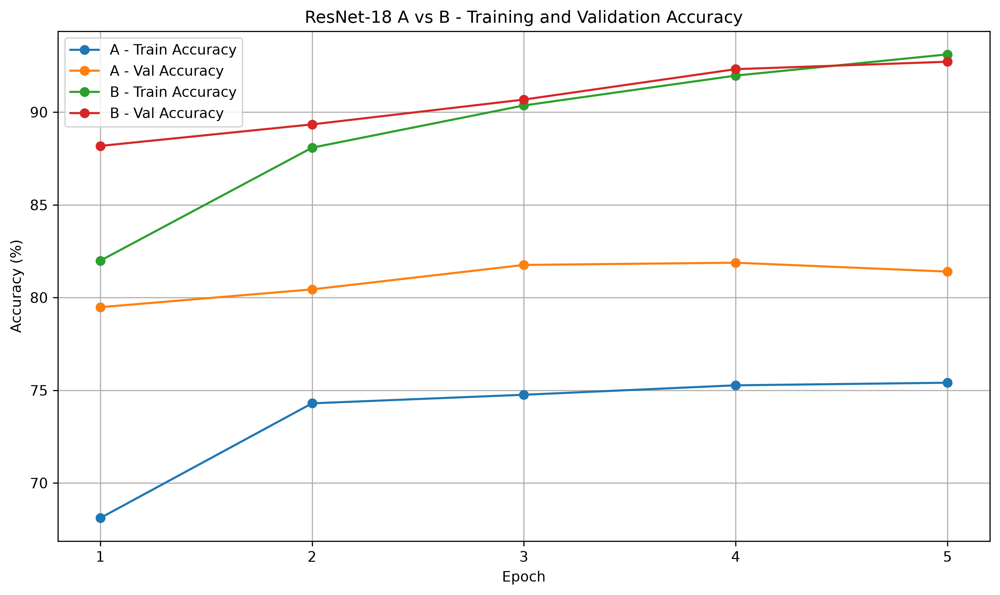
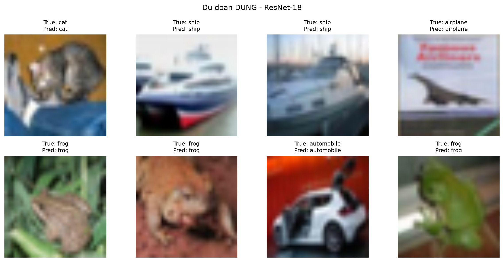
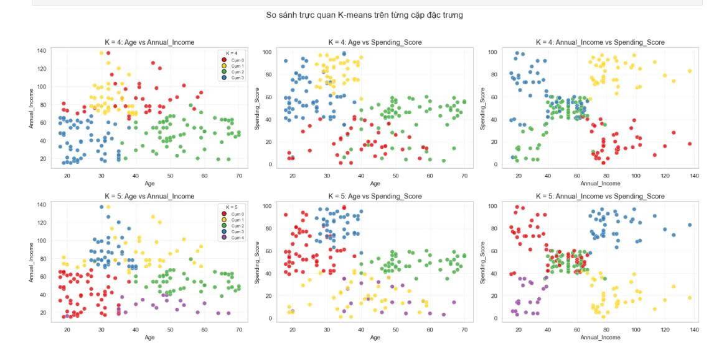

MỤC TIÊU NGHỀ NGHIỆP
Là sinh viên năm 3 ngành Khoa học Dữ liệu & Trí tuệ nhân tạo với niềm đam mê mạnh mẽ trong lĩnh vực AI. Tôi mong muốn vận dụng kiến thức về Machine Learning, Deep Learning và Cloud AI để đóng góp vào các dự án thực tiễn, đồng thời không ngừng học hỏi và phát triển bản thân trong môi trường công nghệ hiện đại. Định hướng trở thành AI Engineer / ML Engineer chuyên nghiệp.
HỌC VẤN
Sinh Viên chuyên ngành Khoa học Dữ liệu & Trí tuệ nhân tạo
Trường Đại học Giao thông Vận tải TP. HCM (UTH)
- Chuyên sâu: Machine Learning, Deep Learning, NLP, Cloud AI
- Tham gia tích cực các dự án nhóm về AI ứng dụng
KINH NGHIỆM LÀM VIỆC
Thực tập sinh Cloud AI
Amazon Web Services (AWS)
- Nghiên cứu và triển khai các giải pháp AI trên nền tảng AWS (SageMaker)
- Tối ưu hóa hiệu năng inference model, giảm latency hệ thống Cloud AI
- Phối hợp với team kỹ sư trong các dự án AI production

Deep Learning — Computer Vision & NLP
Dự án nhóm môn học — UTH
- Xây dựng pipeline phân loại ảnh CIFAR-10 bằng PyTorch; triển khai các mô hình CNN pretrained gồm ResNet-18, VGG-16 và DenseNet-121, áp dụng Transfer Learning và Fine-tuning.
- Phát triển quy trình xử lý dữ liệu, huấn luyện, Validation, lưu Best Checkpoint và theo dõi Training/Validation Loss, Accuracy bằng TensorBoard.
- Thử nghiệm ResNet-18 với chiến lược Layer4 + FC, đạt 92.16% Validation Accuracy.
- Đảm nhiệm TV5 — Training & Fine-tuning: Fine-tuning DistilBERT trên tập dữ liệu IMDB cho bài toán Binary Sentiment Analysis bằng Hugging Face Trainer, đạt 91.48% Validation Accuracy.


Xem mã nguồn và kết quả dự ánMachine Learning — Supervised & Unsupervised Learning
Dự án nhóm lớp
- Huấn luyện các mô hình Classification như Logistic Regression, SVM và Complement Naive Bayes cho bài toán phân loại email Spam/Ham; thực hiện xử lý văn bản, TF-IDF và tối ưu ngưỡng dự đoán.
- Xây dựng và huấn luyện các mô hình Regression gồm Linear Regression, SVR và MLP bằng PyTorch cho bài toán dự báo doanh thu và giá nhà; triển khai Training Loop, theo dõi Loss và dự đoán trên dữ liệu kiểm tra.
- Triển khai K-means và DBSCAN bằng NumPy cho bài toán phân cụm khách hàng Mall Customers; thực hiện EDA, Feature Engineering, chuẩn hóa dữ liệu và tối ưu tham số phân cụm.
- Trực tiếp thực hiện Model Training và Model Evaluation; đánh giá, so sánh mô hình bằng Accuracy, Precision, Recall, F1-score, Confusion Matrix, MSE, RMSE, MAE, R² và Silhouette Score.

Xem mã nguồn và kết quả dự án